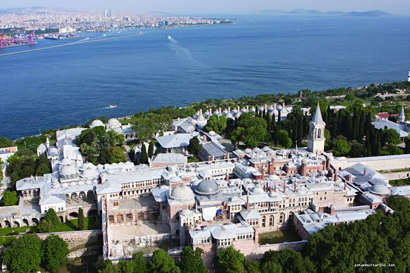

Osmanlı'dan kalan en önemli yapılardan biridir.
İstanbul Fatihi Sultan II. Mehmet tarafından 1460-1478 yılları arasında yaptırılmıştır.
Zamanla eklemeler yapılan Topkapı Sarayı'nın sadece bir bölümünü ünlü mimar Mimar Sinan yapmıştır.
Osmanlı padişahları ve saray halkı 19. yüzyıl ortalarına kadar ikamet etmiştir.
3 Nisan 1924 tarihinde Mustafa Kemal Atatürk'ün emri ile müzeye dönüştürülmüştür.
Müzedeki koleksiyonda;Avrupa porselenleri,Gümüşler,Kutsal emanetler,Padişah elbiseleri,Silahlar gibi değerli parçalar bulunur.
